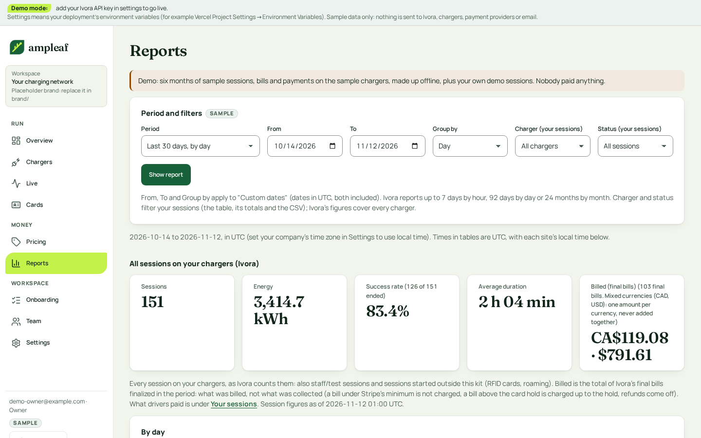

4. Reports
Reports lead with a summary strip, then the chart, then the sessions table with filters; the single primary action is Export CSV.

What changes and why
- Period and grouping controls in one bar; time zone stated.
- Summary strip first (sessions, energy, revenue per currency, success rate, duration).
- Chart is a figure with a caption and a table of the same figures; bars use one colour and are labelled.
- Sessions table: sticky header, aligned money and energy, state chips, filters; export applies the same filters.
- Empty period has a next step.
Follows
- Squid: host dashboard cards for totals and its empty states.
- Adapted: a sessions table with filters and export (Squid shows a short list). Dense tables by look from the hosted Ivora dashboard.
Accessibility
- Text pairs are palette v2 pairs already checked at 4.5:1 or more in light and dark (tests/contrast.test.ts); no new pair is introduced.
-
Keyboard order follows the visual order: skip link, navigation,
page header, primary action, then content. Tabs use arrow keys;
table sort heads are buttons with
aria-sort. - Focus: the existing 3 px token ring on every control; tap targets 44 px (36 px on dense table actions, with 44 px on a phone).
- Status is a shape, a word and a colour; charts have a text equivalent.
Brand tokens
-
Chart colour is
--color-primaryonly; gridlines are the border token.
Build size
M Chart stays as today; the table and controls are restyled.
Demo data only. Current screens are the shipped template's own screenshots (docs/screens).